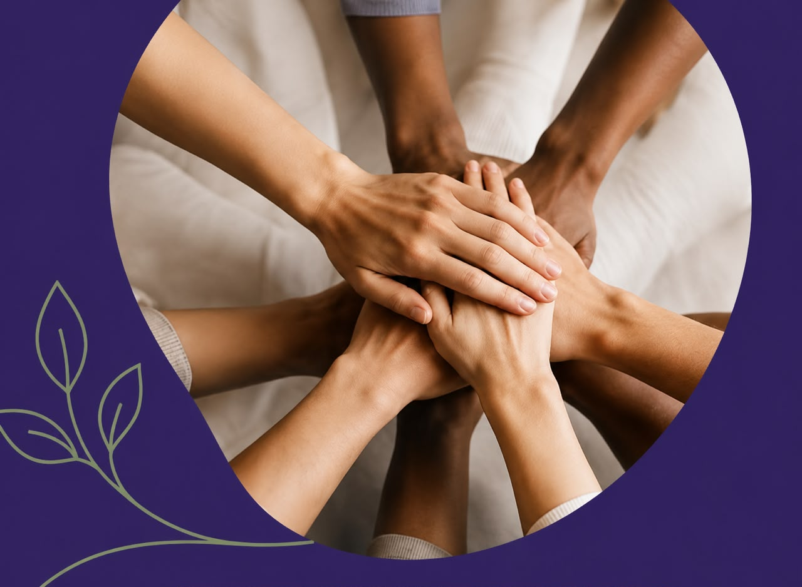

Conocimiento que conecta, herramientas que transforman.
En NEXA encontrarás formación, guías y recursos interdisciplinarios para comprender, actuar y generar impacto en contextos de vulneración de derechos.
Ver cursosEnfoque en derechos y buen trato
Contenido claro, práctico y actualizado
Mirada interdisciplinaria
Para profesionales comprometidos con el impacto social


En NEXA creemos que ninguna problemática completa puede resolverse desde una sola disciplina.
Creemos que cada situación de vulneración de derechos existe una persona que merece una respuesta oportuna, digna e integral.
Creemos en el trabajo colaborativo, en la fuerza de las redes y en la capacidad de distintas disciplinas para construir soluciones que ninguna podria alcanzar sola.
Por eso conectamos conocimiento, profesionales e instituciones en un mismo ecosistema, donde la información se transforma en acción y la coordinación en impacto.
porque proteger derechos no depende únicamente de atender un problema, depende de comprenderlo, compartirlo y abordarlo de manera conjunta

¿Qué encontrarás en NEXA?
Recursos diseñados para el desarrollo profesional y el bienestar de las personas con las que trabajas.
Cursos y capacitaciones
Formación online en áreas clave de vulneracion de derechos
- Contenido actualizado
- Modalidad 100%
- A tu ritmo y desde cualquier lugar
- Certificado de participación
Guías profesionales
Guías prácticas paso a paso para tu trabajo diario
- Uso de OJV paso a paso
- Rutas de actualización
- Elaboración de informes
- Y muchas más
Recursos descargables
Materiales listos para aplicar en tu práctica profesional.
- Plantillas y formatos
- Checklists y flujogramas
- Fichas de intervención
- Presentaciones y más
Para organizaciones
Capacitaciones y recursos diseñados para equipos
- Formación a medida
- Acompañamiento profesional
- Materiales exclusivos
- Fortalecimiento institucional
¿Para quién es NEXA?
Trabajadores/as sociales
Psicólogos/as
Abogados/as
Educadores/as
Terapeutas ocupacionales
Profesionales de la salud
Equipos e instituciones
Y todos los progesionales que trabajan diariamente por el bienestar, la dignidad y los derechos de las personas y comunidades.

Sobre NEXA
NEXA es un centro de gestión interdisciplinaria que impulsa prácticas profesionaes más conscientes, informadas y humanas.
Reunimos conocimiento, experiencia y herramientas para apoyar a quienes están en la primera linea del cambio social.
Enfoque de derechos
Ponemos a las personas al centro de cada intervención.
Interdisciplinariedad
Integramos miradas y sabres para abordar la complejidad.
Calidad y actualización
Contenido riguroso, práctico y en constante actualización.
Compromiso social
Trabajamos por una sociedad más justa, empática e inclusiva.